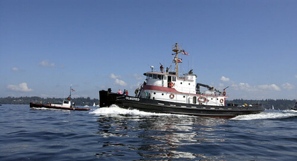

2008 Week 25 in Review
June 15 to June 21, 2008
An Update on the Duwamish
Progress on the Duwamish air compressor continues. I've determined that it is, in fact, a Worthington (despite the "expert" opinions we've been receiving). We located an identical air compressor a little south of here and hope to install it in place of the newer air-cooled model. This will help keep the boat true to its 1940s configuration. I hope we can reach a deal soon.
An Update from the Maris Pearl
The Maris Pearl is doing fine and cruising around Southeast Alaska. Jay reports that the poor weather is not keeping them from having great times. We've been promised pictures and maybe video, so stay tuned.
An Update from the Arthur Foss
Northwest Seaport held its third Tugboat Night tonight. Usually I'm the Tugboat Night leader, but I was busy elsewhere this time so Diana and Nat the museum folks at NWS cranked up the Washington on the Arthur Foss for the evening. They've both been involved in every Tugboat Night I've done and have watched countless startups, so with many phone calls they felt confident enough to run it for their students. I'm told that this Tugboat Night featured the history of the boat and its systems far more than when I lead it (since my philosophy is "let's exercise the systems by turning things on"), but they said it went well and their participants had a good time.
I hope I'm available for the next Tugboat Night, since they really need to run the big towing winch and that's difficult to explain over the phone.
Heavy-Duties and Fuel Efficiency
The heavy-duty diesel engines that OTM Inc works on and advocates for (the Atlas-Imperials, the Washington diesels, the big old Enterprises, and the classic Fairbanks-Morses) are being replaced by new engines. Many folks think that this increases their fuel efficiency, but I want to know, does it really?
When you consider the entire power train (the entire propulsion system), the heavy-duties may be more fuel-efficient in some applications. Most of our customers don't tow or do ship-assist work-jobs where high horsepower is really important. If the engine's job is to get the boat near hull speed and maintain it forever, then it is safe to say there have been no significant fuel efficiency improvements made in the last 80 years of diesel innovation. There for no need to purchase new technology to do the same job.
Here's five examples of how heavy-duty diesels may be more efficient than new engines:
1) A direct-drive system is more efficient. A reduction gear used to bring the RPM of a high-speed diesel's crankshaft down to a useable RPM for the propeller takes energy out of the system through friction. Even when coupled with super-efficient computer-controlled fuel injection, the efficiency of the whole power train may be close to that of a comparable heavy-duty. In contrast, the direct-drive setup that most heavy-duties are part of connects the crankshaft directly to the propeller, transferring more power into propulsion.
2) A big cylinder is more efficient. The larger the whirling ball of hot air ready to accept fuel, the better.
3) A long stroke is more efficient. The long stroke can ensure that all of the useable energy in the ball of fire created in the cylinder is transferred to motion, rather than blowing part of the fire ball up the stack.
4) A big, slow-speed propeller is more efficient. This type of propeller wastes less energy in cavitation and slip, delivering more of the energy to the water.
5) Lower horsepower can be more efficient. Boats are often overpowered, and the extra power is only usable when accelerating, planing, towing, or pushing. If you listen to the marketing department of the engine manufactures, you'll think that more horsepower automatically equals better. This message is broadcast much louder than the engineers' message: that the correct horse power is better. If you install that extra power, chances are that much of it is going up the stack for the gain of a big bow wave and 1/2 a knot:

In this time of high fuel costs, do your homework. When replacing one system for the next, don't make the mistake of basing the decision on the efficiency of one component compared to that of the entire system. Remember that the heavy-duty owners that we talk with rave about the low fuel consumption compared to their newer competitors.
OTM Inc Weekly eBay Auction
This week's prize from the OTM Inc shop is this Stainless Steel Ball Valve with Pneumatic Actuator: